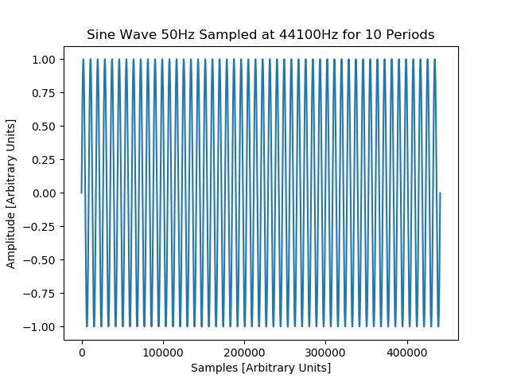

Formation of a 50Hz Sine Wave using Python+Numpy
Discussion:
We use Python together Numpy arrays to create a sine wave at 50Hz for 10 periods. We then use the DFFT Fortran program to computer the DFFT and plot its output with GNUPlot.
Introduction:
First, we start with a Python script to generate a 50Hz sine wave, sampled at 44100Hz, and save these raw data points to a file. We also use Python's Wave package to produce a .wav file that can be actually played using wave file player software.
into a CSV file. We also perform a DFFT in SciLAB so that we may compare the results to the output
of our Fortran 2003 code that uses the FFTW3 algorithm. The SciLAB code is shown below:
Python code to generate a 50Hz sine wave sampled at 44100Hz.
Download the code by clicking the link below:
Python script file to generate 50Hz sine wave
We then run the code and obtain a time domain plot. The result is shown below:
Image of 50Hz Sine Wave using Python

Download the image by clicking the link below:
Image of 50Hz sine wave
Obtaining Discretized Fast Fourier Transform of Raw Data File
Now that the CSV file has been processed into a usable form, the data elements can now be fed
into the FFTW3 DFFT algorithm. The algorithm is used within a Fortran 2003 program.
Click this link to see the Fortran 2003 DFFT code.
Running the Fortran 2003 DFFT Program and Obtaining Output Files
The Fortran 2003 code is compiled and run with the raw data text file as input. The resulting files
include the DFFT magnitude and phase.
Compile by typing: gfortran -o a.out data_file_FFTW.F03 -lfftw3
where a.out is the name of the executable, data_file_FFTW.F03 is the file name of the source code.
Run by typing: ./a.out outfile.dat DFFT_mag_file.dat DFFT_phase_file.dat
where outfile.dat is the output of the Python script, DFFT_mag_file.dat is the DFFT magnitude
DFFT_phase_file.dat is the DFFT phase (if applicable)
The line count can be obtained by typing: wc -l outfile.dat
The Output Files From the Fortran 2003 DFFT Program
After the Fortran 2003 DFFT program has been run correctly, magnitude and phase files should
appear.
The program output is verbose (for debug) purposes and the screen output is shown below:
The full text may be downloaded here.
A section of the magnitude output file is shown below:
Plots of the magnitude output file using GNUPlot
The magnitude output file is plotted with GNUPlot. A GNUPlot script file was created
to facilitate quality plotting.
GNUPlot script file
The GNUPlot script file may be downloaded by clicking here.
Run by typing gnuplot sine_wv_50Hz_gnuplot_macro.txt or start GNUPlot and enter
load "sine_wv_50Hz_gnuplot_macro.txt" at the gnuplot command prompt
Magnitude Plot
Discussion:
There appears to be a slight skew in frequency in the peak of the DFFT plot. It appears to show a peak of around 59Hz, rather than purely 50Hz. Since other raw data inputs into the Fortran program produced results as expected, the skew may be related to the way the data were generated in Python+Numpy or the way it was saved into a text file. More research is needed to find the cause.
Back to Current Projects - FFTW3